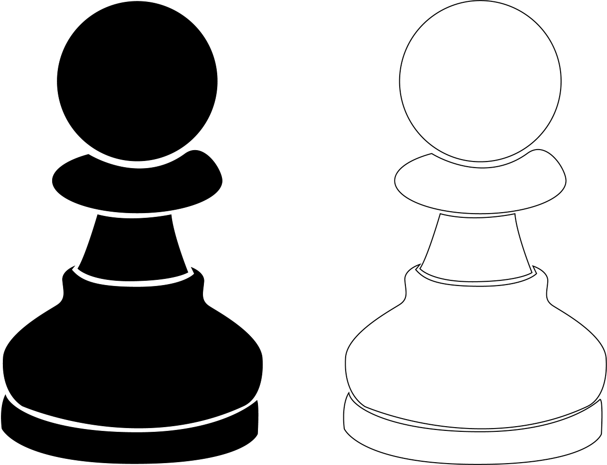
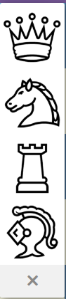

•폰의 생김새

•폰의 움직임
먼저 폰이 자기에서 2번째 행에 있을때 는 2칸을 갈수있지만
다른 칸에 있다면 1칸밖에 못간다

이렇게 2칸을 갈수 있다(회색이 갈수있는곳)

이렇게 1칸을 갈수 있다(회색이 갈수있는곳)
폰의 기물 먹방

빨간색으로 되어있는곳에 기물이 있다면 먹을수있다
승진

폰이 상대방 끝 행에 도착했을때 원하는 킹빼고 원하는 기물로바뀔수 있다
가장 많이 승진시키는것은 퀸이다
폰은 앤딩에서 승진 하여 반전을 시킬수있는 수이기 때문에 폰이 중요하다고 생각하는 사람들이 많다
여기까지가 폰에대한 설명이었다
체스의 기물